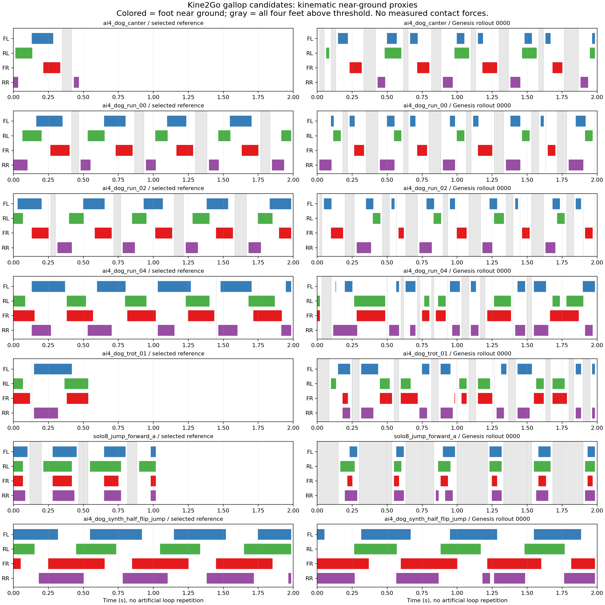

분석일 2026-10-06 · 목표 기체 Go2 EDU · 입력은 공개 Kine2Go Go2 reference와 Genesis rollout. EDU 실물 검증 결과와 구별한다.
| 후보 | 선택 범위 / 길이 | reference 전진 속도 | 몸통 pitch 변화 폭 | 판단 |
|---|---|---|---|---|
| ai4_dog_run_02 | [35,196) / 161프레임 | 2.60 m/s | 22.8° | 가장 먼저 검토할 주기 소재. 2 cm 기준 5개의 완전한 비대칭 추정 주기, 1–3 cm 모두 rotary 유사. 독립된 run 파일이며 반복 경계가 좋은 27프레임 후보 존재. |
| ai4_dog_run_00 | [399,535) / 136프레임 | 2.64 m/s | 25.7° | 반복 비대칭 달리기 소재. 2 cm 기준 4주기, 1–3 cm 모두 rotary 유사. canter 원본과 동일하며 canter 구간을 포함. |
| ai4_dog_canter | [430,459) / 29프레임 | 2.59 m/s | 24.7° | 공식 단일 짧은 달리기 reference. 높이 기반 위상에서는 네 발이 따로 나타나므로 이름만으로 엄격한 3박자 canter라고 가정하지 않는다. 가상 반복 결과를 자연 연속 주기 수로 세지 않았다. |
| ai4_dog_run_04 | [493,716) / 223프레임 | 1.52 m/s | 9.9° | trot 중심 대조군. trot_01의 원본과 동일하고 [630,663) 구간을 포함한다. 2 cm 기준 trot 유사 3주기·모호한 2주기. |
| ai4_dog_trot_00 / trot_01 | [448,481) / [630,663) | 1.46 / 1.44 m/s | 7.4° / 3.4° | 빠른 trot와 gallop의 구분용. trot_00은 높이 proxy만으로 분류하기 어려우므로 공식 라벨을 덮어쓰지 않는다. |
| solo8_jump_forward_a / b | [52,114) / [37,112) | 1.50 / 1.17 m/s | 13.8° / 5.2° | 몸통 높이 변화가 22.2 / 23.0 cm로 크다. 도약·착지 및 공중 구간 비교에 유용하나 비대칭 gallop 주기의 직접 reference는 아니다. |
| solo8_scoot_forward | [69,119) / 50프레임 | 1.22 m/s | 20.6° | 큰 몸통 운동은 유사하지만 공개 대표 rollout에서는 trot 유사 패턴이 우세. 모양의 유사성과 발 순서를 구분해야 한다. |
| solo8_crawl_fast | [77,119) / 42프레임 | 1.44 m/s | 2.9° | 대표 rollout에 비대칭 proxy 주기가 일부 있지만 trot 등과 혼재. 이름 밖의 동작 변화 관찰용 보조 후보이며 깨끗한 gallop 소재로는 부족. |
| ai4_dog_synth_half_flip_jump | [116,1165) / 1049프레임 reference | 0.87 m/s | 5.4° | reference는 ellipse_walk와 동일. 점프는 별도 동물 갤럽 자료가 아니라 추종 실패에서 생긴 정책 동작. 공개 rollout 300프레임에서 pitch 변화 폭 37.2°·yaw 총 변화 약 180°. |
| ai4_dog_walk_03 / walk_04 / walk_06 | 각 config 구간 | 1.22 / 1.54 / 1.42 m/s | 10.3° / 6.4° / 6.6° | 이름이 walk여도 빠른 trot 구간이 있어 추가 비교했다. walk_03의 일부 비대칭 추정은 임계값에 민감하고 안정된 gallop 전체로 볼 근거는 부족하다. |
주요 run reference의 반복 순서는 순환 시작점을 RR에 두면 대략 RR → RL → FL → FR이다. 뒷다리 lead는 RL, 앞다리 lead는 FR인 회전형 관계로 추정된다. canter는 같은 run_00 파일의 짧은 구간이다. 별도의 말 gallop이나 gallop이라는 이름의 clip은 공식 40개 목록에 없다.
세 후보의 대표 rollout은 전진 속도 약 2.5–2.7 m/s로 실행되지만, FL이 한 주기에 두 번 낮아지는 구간이 반복적으로 나타난다. canter/run_00/run_02의 세 표본에서 단순 저발높이 이벤트 수가 각각 다른 다리의 약 두 배인 경우가 있다. 실제 두 번의 지지 접촉인지, 순간적인 낮은 위치·접촉 변화인지는 저장된 힘이 없어 확정할 수 없다. 그래서 source의 4박자를 공개 policy가 완벽히 유지했다고 결론내리지 않는다.

추천 순서: run_02의 좋은 주기 → run_00의 좋은 주기 → 공식 canter 구간을 비교군으로 유지. run_02에서 117→144 경계의 27프레임(0.45초) 후보는 관절 자세 최대 차이 약 1.82°, 높이 차이 약 1.81 mm다. run_00의 457→484 후보는 약 3.15°, 높이 차이 약 1.42 mm다. 이것은 경계 자세 비교이며 속도·접촉·힘까지 연속인 주기를 보증하지 않는다. 아직 NPZ 변환이나 학습 완료 결과가 아니다.
공식 canter의 430→459 경계는 관절 자세 차이 최대 약 18.38°다. 짧다는 이유로 그대로 반복하기 가장 좋은 clip이라고 단정하면 안 된다. 배열의 마지막 저장 표본(458)과 첫 표본(430) 차이 7.76°와, 한 주기 뒤 경계 표본(459)과 첫 표본 차이는 서로 다른 검사다.
세 후보의 무릎 최대 reference 속도는 수치 미분 기준 12.66 / 12.66 / 14.48 rad/s(canter/run_00/run_02)다. Unitree 공개 URDF 무릎 15.70 rad/s 아래이지만, 이 사실만으로 토크–속도·착지·전력 한계를 충족한다고 볼 수 없다. 몸통 pitch 변화가 큰데 실제 Go2 EDU의 안정성을 위해 얼마나 조정해야 하는지도 따로 평가해야 한다. EDU에 없는 척추 운동은 reference의 몸통 전체 pitch와 구별한다.
v_ref/v_roll은 전진 속도(m/s), pitch는 reference의 변화 폭(°), Δz는 reference 몸통 높이 변화(cm). rollout은 traj_0000 한 표본의 평균이다. 순위 점수나 성공률로 해석하지 않는다.
40개 / 40개
| 동작 | 갤럽 관련성 | config 범위 | 선택 프레임 | v_ref | pitch | Δz | v_roll | 비교 판단 |
|---|---|---|---|---|---|---|---|---|
| ai4_dog_canter | 높음 — 비대칭 달리기 reference | [430, 459] | 29 | 2.59 | 24.7 | 4.6 | 2.51 | 앞·뒤 좌우 위상 모두 비대칭. 5개 높이 임계값에서 회전형 갤럽 유사 패턴 유지. |
| ai4_dog_left_turn | 낮음 — 걷기·회전·횡이동 | [1085, 1124] | 39 | 0.68 | 6.3 | 1.6 | 0.66 | 현재 목록과 선택 구간에서 반복적 gallop reference를 뒷받침하는 근거 부족. 일부 단발 proxy 라벨로 재분류하지 않음. |
| ai4_dog_pace | 낮음 — pace | [162, 201] | 39 | 0.89 | 4.0 | 1.5 | 0.88 | 동측 다리 협응 비교용. 갤럽형 앞·뒤 leading/trailing 관계와 구별. |
| ai4_dog_right_turn | 낮음 — 걷기·회전·횡이동 | [2404, 2450] | 46 | -0.03 | 6.3 | 2.0 | -0.03 | 현재 목록과 선택 구간에서 반복적 gallop reference를 뒷받침하는 근거 부족. 일부 단발 proxy 라벨로 재분류하지 않음. |
| ai4_dog_run_00 | 높음 — 비대칭 달리기 reference | [399, 535] | 136 | 2.64 | 25.7 | 6.8 | 2.71 | 앞·뒤 좌우 위상 모두 비대칭. 5개 높이 임계값에서 회전형 갤럽 유사 패턴 유지. |
| ai4_dog_run_02 | 높음 — 비대칭 달리기 reference | [35, 196] | 161 | 2.60 | 22.8 | 5.0 | 2.66 | 앞·뒤 좌우 위상 모두 비대칭. 5개 높이 임계값에서 회전형 갤럽 유사 패턴 유지. |
| ai4_dog_run_04 | 대조군 — trot 중심 | [493, 716] | 223 | 1.52 | 9.9 | 3.8 | 1.63 | trot_01과 원본 배열이 같고 해당 trot 구간을 포함. run이라는 이름만으로 gallop 판정 불가. |
| ai4_dog_synth_circle_walk | 낮음 — 걷기·회전·횡이동 | [446, 806] | 360 | 0.87 | 2.9 | 1.4 | 0.87 | 현재 목록과 선택 구간에서 반복적 gallop reference를 뒷받침하는 근거 부족. 일부 단발 proxy 라벨로 재분류하지 않음. |
| ai4_dog_synth_eight_walk | 낮음 — 걷기·회전·횡이동 | [0, -1] | 1175 | 0.49 | 8.0 | 2.8 | 0.48 | 현재 목록과 선택 구간에서 반복적 gallop reference를 뒷받침하는 근거 부족. 일부 단발 proxy 라벨로 재분류하지 않음. |
| ai4_dog_synth_ellipse_walk | 낮음 — 걷기·회전·횡이동 | [116, 1165] | 1049 | 0.87 | 5.4 | 2.0 | 0.87 | 현재 목록과 선택 구간에서 반복적 gallop reference를 뒷받침하는 근거 부족. 일부 단발 proxy 라벨로 재분류하지 않음. |
| ai4_dog_synth_half_flip_jump | 부분 유사 — 정책에서 생긴 점프 | [116, 1165] | 1049 | 0.87 | 5.4 | 2.0 | 0.72 | reference가 ellipse_walk와 바이트 단위 동일. 점프는 policy 추종 실패에서 생긴 180° 회전 동작(논문 Appendix A). |
| ai4_dog_synth_square_walk | 낮음 — 걷기·회전·횡이동 | [29, 1087] | 1058 | 0.93 | 10.2 | 3.1 | 0.94 | 현재 목록과 선택 구간에서 반복적 gallop reference를 뒷받침하는 근거 부족. 일부 단발 proxy 라벨로 재분류하지 않음. |
| ai4_dog_synth_tight_strafe | 낮음 — 걷기·회전·횡이동 | [54, 962] | 908 | 0.51 | 9.6 | 2.3 | 0.49 | 현재 목록과 선택 구간에서 반복적 gallop reference를 뒷받침하는 근거 부족. 일부 단발 proxy 라벨로 재분류하지 않음. |
| ai4_dog_synth_wide_strafe | 낮음 — 걷기·회전·횡이동 | [12, 1080] | 1068 | 0.94 | 13.4 | 3.9 | 0.93 | 현재 목록과 선택 구간에서 반복적 gallop reference를 뒷받침하는 근거 부족. 일부 단발 proxy 라벨로 재분류하지 않음. |
| ai4_dog_trot_00 | 대조군 — trot | [448, 481] | 33 | 1.46 | 7.4 | 3.6 | 1.49 | 대각 다리 교대 달리기 비교용. 특히 trot_00은 높이 임계값만으로 라벨이 불안정해 원 라벨과 함께 해석. |
| ai4_dog_trot_01 | 대조군 — trot | [630, 663] | 33 | 1.44 | 3.4 | 3.5 | 1.49 | 대각 다리 교대 달리기 비교용. 특히 trot_00은 높이 임계값만으로 라벨이 불안정해 원 라벨과 함께 해석. |
| ai4_dog_walk_00 | 낮음 — 걷기·회전·횡이동 | [101, 580] | 479 | 0.90 | 7.6 | 2.6 | 0.92 | 현재 목록과 선택 구간에서 반복적 gallop reference를 뒷받침하는 근거 부족. 일부 단발 proxy 라벨로 재분류하지 않음. |
| ai4_dog_walk_01 | 낮음 — 걷기·회전·횡이동 | [377, 1050] | 673 | 0.73 | 8.2 | 2.4 | 0.73 | 현재 목록과 선택 구간에서 반복적 gallop reference를 뒷받침하는 근거 부족. 일부 단발 proxy 라벨로 재분류하지 않음. |
| ai4_dog_walk_02 | 낮음 — 걷기·회전·횡이동 | [429, 879] | 450 | 0.93 | 11.5 | 3.4 | 0.91 | 현재 목록과 선택 구간에서 반복적 gallop reference를 뒷받침하는 근거 부족. 일부 단발 proxy 라벨로 재분류하지 않음. |
| ai4_dog_walk_03 | 보조/대조 — 빠른 walk·trot 구간 | [177, 545] | 368 | 1.22 | 10.3 | 5.5 | 1.16 | walk_03은 trot_00과 원본 공유; walk_04·06은 빠른 trot 유사 구간. 일부 비대칭 판정은 임계값/전환에 민감. |
| ai4_dog_walk_04 | 보조/대조 — 빠른 walk·trot 구간 | [234, 533] | 299 | 1.54 | 6.4 | 4.5 | 1.58 | walk_03은 trot_00과 원본 공유; walk_04·06은 빠른 trot 유사 구간. 일부 비대칭 판정은 임계값/전환에 민감. |
| ai4_dog_walk_06 | 보조/대조 — 빠른 walk·trot 구간 | [200, 392] | 192 | 1.42 | 6.6 | 4.6 | 1.36 | walk_03은 trot_00과 원본 공유; walk_04·06은 빠른 trot 유사 구간. 일부 비대칭 판정은 임계값/전환에 민감. |
| solo8_crawl_fast | 보조 관찰 — 빠른 crawl | [77, 119] | 42 | 1.44 | 2.9 | 4.3 | 1.44 | 대표 rollout에 비대칭 추정 구간 일부가 있으나 여러 패턴 혼재·trot 유사가 우세. 숨은 gallop으로 확정 불가. |
| solo8_crawl_slow | 낮음 — 걷기·회전·횡이동 | [25, -1] | 94 | 0.41 | 7.4 | 4.7 | 0.42 | 현재 목록과 선택 구간에서 반복적 gallop reference를 뒷받침하는 근거 부족. 일부 단발 proxy 라벨로 재분류하지 않음. |
| solo8_jump_forward_a | 부분 유사 — 도약 | [52, 114] | 62 | 1.50 | 13.8 | 22.2 | 1.56 | 몸통 수직 이동·공중 구간은 유사하나 안정된 비대칭 네 발 순서를 뜻하지 않음. 도약/착지 대조군. |
| solo8_jump_forward_b | 부분 유사 — 도약 | [37, 112] | 75 | 1.17 | 5.2 | 23.0 | 1.18 | 몸통 수직 이동·공중 구간은 유사하나 안정된 비대칭 네 발 순서를 뜻하지 않음. 도약/착지 대조군. |
| solo8_scoot_forward | 부분 유사 — scoot | [69, 119] | 50 | 1.22 | 20.6 | 13.1 | 1.18 | 큰 몸통 pitch와 높이 변화가 있으나 대표 rollout의 발 위상은 trot 유사가 우세. gallop 직접 reference로 비추천. |
| solo8_walk | 낮음 — 걷기·회전·횡이동 | [49, 84] | 35 | 0.83 | 2.2 | 4.5 | 0.81 | 현재 목록과 선택 구간에서 반복적 gallop reference를 뒷받침하는 근거 부족. 일부 단발 proxy 라벨로 재분류하지 않음. |
| vhdc_horse1_s1_trot_01 | 대조군 — horse trot | [13, 594] | 581 | 0.66 | 2.1 | 12.6 | 0.67 | 말 trot만 제공되며 말 gallop은 목록에 없음. reference의 발 높이를 실제 공중기로 오인하면 안 됨. |
| vhdc_horse1_s1_trot_02 | 대조군 — horse trot | [2, 599] | 597 | 0.66 | 2.1 | 12.1 | 0.68 | 말 trot만 제공되며 말 gallop은 목록에 없음. reference의 발 높이를 실제 공중기로 오인하면 안 됨. |
| vhdc_horse1_s1_trot_03 | 대조군 — horse trot | [12, 567] | 555 | 0.66 | 2.1 | 11.0 | 0.66 | 말 trot만 제공되며 말 gallop은 목록에 없음. reference의 발 높이를 실제 공중기로 오인하면 안 됨. |
| vhdc_horse1_s1_walk_01 | 낮음 — 걷기·회전·횡이동 | [9, 599] | 590 | 0.35 | 8.7 | 4.0 | 0.36 | 현재 목록과 선택 구간에서 반복적 gallop reference를 뒷받침하는 근거 부족. 일부 단발 proxy 라벨로 재분류하지 않음. |
| vhdc_horse1_s1_walk_02 | 낮음 — 걷기·회전·횡이동 | [4, 591] | 587 | 0.34 | 8.4 | 3.9 | 0.35 | 현재 목록과 선택 구간에서 반복적 gallop reference를 뒷받침하는 근거 부족. 일부 단발 proxy 라벨로 재분류하지 않음. |
| vhdc_horse1_s1_walk_03 | 낮음 — 걷기·회전·횡이동 | [9, 598] | 589 | 0.35 | 8.6 | 4.1 | 0.35 | 현재 목록과 선택 구간에서 반복적 gallop reference를 뒷받침하는 근거 부족. 일부 단발 proxy 라벨로 재분류하지 않음. |
| vhdc_horse1_s2_trot_01 | 대조군 — horse trot | [7, 1144] | 1137 | 0.32 | 3.1 | 6.2 | 0.34 | 말 trot만 제공되며 말 gallop은 목록에 없음. reference의 발 높이를 실제 공중기로 오인하면 안 됨. |
| vhdc_horse1_s2_trot_02 | 대조군 — horse trot | [3, 1173] | 1170 | 0.32 | 2.4 | 6.6 | 0.34 | 말 trot만 제공되며 말 gallop은 목록에 없음. reference의 발 높이를 실제 공중기로 오인하면 안 됨. |
| vhdc_horse1_s2_trot_03 | 대조군 — horse trot | [10, 1194] | 1184 | 0.33 | 2.1 | 6.9 | 0.33 | 말 trot만 제공되며 말 gallop은 목록에 없음. reference의 발 높이를 실제 공중기로 오인하면 안 됨. |
| vhdc_horse1_s2_walk_01 | 낮음 — 걷기·회전·횡이동 | [16, 1145] | 1129 | 0.20 | 8.6 | 2.9 | 0.20 | 현재 목록과 선택 구간에서 반복적 gallop reference를 뒷받침하는 근거 부족. 일부 단발 proxy 라벨로 재분류하지 않음. |
| vhdc_horse1_s2_walk_02 | 낮음 — 걷기·회전·횡이동 | [27, 1153] | 1126 | 0.19 | 8.2 | 3.0 | 0.19 | 현재 목록과 선택 구간에서 반복적 gallop reference를 뒷받침하는 근거 부족. 일부 단발 proxy 라벨로 재분류하지 않음. |
| vhdc_horse1_s2_walk_03 | 낮음 — 걷기·회전·횡이동 | [40, 1137] | 1097 | 0.19 | 8.8 | 3.1 | 0.20 | 현재 목록과 선택 구간에서 반복적 gallop reference를 뒷받침하는 근거 부족. 일부 단발 proxy 라벨로 재분류하지 않음. |
앞·뒤 좌우 위상 모두 비대칭. 5개 높이 임계값에서 회전형 갤럽 유사 패턴 유지.
원본 파일: dog_run00_joint_pos.txt / catalogue: [430, 459) / 실제 config: [430, 459]. 배열 567프레임, 선택 구간 29프레임, 메타데이터 n_frames 571는 확인한 rollout 길이와 일치.
속도는 저장된 Go2 reference의 root 궤적을 60 Hz로 재생한 값이며 원래 동물 실측 속도가 아니다. 선택 구간의 hip/thigh/calf 최대 수치 미분 속도: [3.565395176410675, 15.74297547340393, 12.657963037490845]. 위치 한계 초과: 0.000000 rad. FK 최대 오차 0.00000134 m.
| 높이 임계값 | 추정 주기 패턴 수 | 네 발이 모두 높은 프레임 비율 |
|---|---|---|
| 1.0 cm | {"rotary-gallop-like": 1} | 31.0% |
| 1.5 cm | {"rotary-gallop-like": 1} | 24.1% |
| 2.0 cm | {"rotary-gallop-like": 1} | 17.2% |
| 2.5 cm | {"rotary-gallop-like": 1} | 17.2% |
| 3.0 cm | {"rotary-gallop-like": 1} | 17.2% |
마지막 열은 실제 공중기 비율이 아닌 운동학적 proxy다. 50프레임 이하 reference의 위상 추정은 가상 반복을 사용했으며 반복 주행 성공을 증명하지 않는다.
| 공개 rollout | 프레임 | 전진 속도 | pitch 범위 폭(°) | 발 높이 기반 패턴 수 |
|---|---|---|---|---|
| traj_0000 | 571 | 2.51 | 40.2 | {"rotary-gallop-like": 1} |
| traj_0001 | 571 | 2.50 | 26.8 | {} |
| traj_0002 | 571 | 2.53 | 35.8 | {"other/ambiguous": 1} |
현재 목록과 선택 구간에서 반복적 gallop reference를 뒷받침하는 근거 부족. 일부 단발 proxy 라벨로 재분류하지 않음.
원본 파일: dog_walk09_joint_pos.txt / catalogue: [1085, 1124) / 실제 config: [1085, 1124]. 배열 4336프레임, 선택 구간 39프레임, 메타데이터 n_frames 571는 확인한 rollout 길이와 일치.
속도는 저장된 Go2 reference의 root 궤적을 60 Hz로 재생한 값이며 원래 동물 실측 속도가 아니다. 선택 구간의 hip/thigh/calf 최대 수치 미분 속도: [3.475268427282572, 7.7454400062561035, 4.716796875]. 위치 한계 초과: 0.000000 rad. FK 최대 오차 0.00000042 m.
| 높이 임계값 | 추정 주기 패턴 수 | 네 발이 모두 높은 프레임 비율 |
|---|---|---|
| 1.0 cm | {"pace-like": 1} | 0.0% |
| 1.5 cm | {"pace-like": 1} | 0.0% |
| 2.0 cm | {"pace-like": 1} | 0.0% |
| 2.5 cm | {"pace-like": 1} | 0.0% |
| 3.0 cm | {"pace-like": 1} | 0.0% |
마지막 열은 실제 공중기 비율이 아닌 운동학적 proxy다. 50프레임 이하 reference의 위상 추정은 가상 반복을 사용했으며 반복 주행 성공을 증명하지 않는다.
| 공개 rollout | 프레임 | 전진 속도 | pitch 범위 폭(°) | 발 높이 기반 패턴 수 |
|---|---|---|---|---|
| traj_0000 | 571 | 0.66 | 4.8 | {"pace-like": 1} |
동측 다리 협응 비교용. 갤럽형 앞·뒤 leading/trailing 관계와 구별.
원본 파일: dog_walk00_joint_pos.txt / catalogue: [162, 201) / 실제 config: [162, 201]. 배열 593프레임, 선택 구간 39프레임, 메타데이터 n_frames 571는 확인한 rollout 길이와 일치.
속도는 저장된 Go2 reference의 root 궤적을 60 Hz로 재생한 값이며 원래 동물 실측 속도가 아니다. 선택 구간의 hip/thigh/calf 최대 수치 미분 속도: [3.310784250497818, 10.25646686553955, 6.989579200744629]. 위치 한계 초과: 0.000000 rad. FK 최대 오차 0.00000117 m.
| 높이 임계값 | 추정 주기 패턴 수 | 네 발이 모두 높은 프레임 비율 |
|---|---|---|
| 1.0 cm | {"symmetric-four-beat": 1} | 0.0% |
| 1.5 cm | {"symmetric-four-beat": 1} | 0.0% |
| 2.0 cm | {"symmetric-four-beat": 1} | 0.0% |
| 2.5 cm | {"symmetric-four-beat": 1} | 0.0% |
| 3.0 cm | {"symmetric-four-beat": 1} | 0.0% |
마지막 열은 실제 공중기 비율이 아닌 운동학적 proxy다. 50프레임 이하 reference의 위상 추정은 가상 반복을 사용했으며 반복 주행 성공을 증명하지 않는다.
| 공개 rollout | 프레임 | 전진 속도 | pitch 범위 폭(°) | 발 높이 기반 패턴 수 |
|---|---|---|---|---|
| traj_0000 | 571 | 0.88 | 7.8 | {} |
현재 목록과 선택 구간에서 반복적 gallop reference를 뒷받침하는 근거 부족. 일부 단발 proxy 라벨로 재분류하지 않음.
원본 파일: dog_walk09_joint_pos.txt / catalogue: [2404, 2450) / 실제 config: [2404, 2450]. 배열 4336프레임, 선택 구간 46프레임, 메타데이터 n_frames 571는 확인한 rollout 길이와 일치.
속도는 저장된 Go2 reference의 root 궤적을 60 Hz로 재생한 값이며 원래 동물 실측 속도가 아니다. 선택 구간의 hip/thigh/calf 최대 수치 미분 속도: [5.536949783563614, 3.929697275161743, 6.973428726196289]. 위치 한계 초과: 0.000000 rad. FK 최대 오차 0.00000042 m.
| 높이 임계값 | 추정 주기 패턴 수 | 네 발이 모두 높은 프레임 비율 |
|---|---|---|
| 1.0 cm | {"other/ambiguous": 1} | 0.0% |
| 1.5 cm | {} | 0.0% |
| 2.0 cm | {"other/ambiguous": 1} | 0.0% |
| 2.5 cm | {"other/ambiguous": 1} | 0.0% |
| 3.0 cm | {"other/ambiguous": 1} | 0.0% |
마지막 열은 실제 공중기 비율이 아닌 운동학적 proxy다. 50프레임 이하 reference의 위상 추정은 가상 반복을 사용했으며 반복 주행 성공을 증명하지 않는다.
| 공개 rollout | 프레임 | 전진 속도 | pitch 범위 폭(°) | 발 높이 기반 패턴 수 |
|---|---|---|---|---|
| traj_0000 | 571 | -0.03 | 7.2 | {"canter-like": 1} |
앞·뒤 좌우 위상 모두 비대칭. 5개 높이 임계값에서 회전형 갤럽 유사 패턴 유지.
원본 파일: dog_run00_joint_pos.txt / catalogue: [399, 535) / 실제 config: [399, 535]. 배열 567프레임, 선택 구간 136프레임, 메타데이터 n_frames 571는 확인한 rollout 길이와 일치.
속도는 저장된 Go2 reference의 root 궤적을 60 Hz로 재생한 값이며 원래 동물 실측 속도가 아니다. 선택 구간의 hip/thigh/calf 최대 수치 미분 속도: [4.609879776835442, 18.556256890296936, 12.657963037490845]. 위치 한계 초과: 0.000000 rad. FK 최대 오차 0.00000134 m.
| 높이 임계값 | 추정 주기 패턴 수 | 네 발이 모두 높은 프레임 비율 |
|---|---|---|
| 1.0 cm | {"rotary-gallop-like": 3} | 28.7% |
| 1.5 cm | {"rotary-gallop-like": 4} | 19.1% |
| 2.0 cm | {"rotary-gallop-like": 4} | 16.9% |
| 2.5 cm | {"rotary-gallop-like": 4} | 14.0% |
| 3.0 cm | {"rotary-gallop-like": 4} | 13.2% |
마지막 열은 실제 공중기 비율이 아닌 운동학적 proxy다. 50프레임 이하 reference의 위상 추정은 가상 반복을 사용했으며 반복 주행 성공을 증명하지 않는다.
| 공개 rollout | 프레임 | 전진 속도 | pitch 범위 폭(°) | 발 높이 기반 패턴 수 |
|---|---|---|---|---|
| traj_0000 | 571 | 2.71 | 29.5 | {} |
| traj_0001 | 571 | 2.70 | 33.1 | {} |
| traj_0002 | 571 | 2.68 | 27.1 | {} |
앞·뒤 좌우 위상 모두 비대칭. 5개 높이 임계값에서 회전형 갤럽 유사 패턴 유지.
원본 파일: dog_run02_joint_pos.txt / catalogue: [35, 196) / 실제 config: [35, 196]. 배열 203프레임, 선택 구간 161프레임, 메타데이터 n_frames 571는 확인한 rollout 길이와 일치.
속도는 저장된 Go2 reference의 root 궤적을 60 Hz로 재생한 값이며 원래 동물 실측 속도가 아니다. 선택 구간의 hip/thigh/calf 최대 수치 미분 속도: [4.624818228185177, 16.641713976860046, 14.480212926864624]. 위치 한계 초과: 0.000000 rad. FK 최대 오차 0.00000129 m.
| 높이 임계값 | 추정 주기 패턴 수 | 네 발이 모두 높은 프레임 비율 |
|---|---|---|
| 1.0 cm | {"rotary-gallop-like": 5} | 22.4% |
| 1.5 cm | {"rotary-gallop-like": 5} | 18.6% |
| 2.0 cm | {"rotary-gallop-like": 5} | 16.8% |
| 2.5 cm | {"rotary-gallop-like": 5} | 13.0% |
| 3.0 cm | {"rotary-gallop-like": 5} | 11.2% |
마지막 열은 실제 공중기 비율이 아닌 운동학적 proxy다. 50프레임 이하 reference의 위상 추정은 가상 반복을 사용했으며 반복 주행 성공을 증명하지 않는다.
| 공개 rollout | 프레임 | 전진 속도 | pitch 범위 폭(°) | 발 높이 기반 패턴 수 |
|---|---|---|---|---|
| traj_0000 | 571 | 2.66 | 26.4 | {"rotary-gallop-like": 1} |
| traj_0001 | 571 | 2.66 | 27.4 | {"other/ambiguous": 2} |
| traj_0002 | 571 | 2.65 | 25.4 | {"other/ambiguous": 1} |
trot_01과 원본 배열이 같고 해당 trot 구간을 포함. run이라는 이름만으로 gallop 판정 불가.
원본 파일: dog_run04_joint_pos.txt / catalogue: [493, 716) / 실제 config: [493, 716]. 배열 1263프레임, 선택 구간 223프레임, 메타데이터 n_frames 571는 확인한 rollout 길이와 일치.
속도는 저장된 Go2 reference의 root 궤적을 60 Hz로 재생한 값이며 원래 동물 실측 속도가 아니다. 선택 구간의 hip/thigh/calf 최대 수치 미분 속도: [4.109962172806263, 16.72608107328415, 11.429822444915771]. 위치 한계 초과: 0.000000 rad. FK 최대 오차 0.00000086 m.
| 높이 임계값 | 추정 주기 패턴 수 | 네 발이 모두 높은 프레임 비율 |
|---|---|---|
| 1.0 cm | {"trot-like": 1, "other/ambiguous": 1} | 11.7% |
| 1.5 cm | {"trot-like": 4, "other/ambiguous": 1} | 5.8% |
| 2.0 cm | {"other/ambiguous": 2, "trot-like": 3} | 0.9% |
| 2.5 cm | {"other/ambiguous": 1, "symmetric-four-beat": 2, "trot-like": 2} | 0.0% |
| 3.0 cm | {"other/ambiguous": 1, "symmetric-four-beat": 3, "trot-like": 1} | 0.0% |
마지막 열은 실제 공중기 비율이 아닌 운동학적 proxy다. 50프레임 이하 reference의 위상 추정은 가상 반복을 사용했으며 반복 주행 성공을 증명하지 않는다.
| 공개 rollout | 프레임 | 전진 속도 | pitch 범위 폭(°) | 발 높이 기반 패턴 수 |
|---|---|---|---|---|
| traj_0000 | 571 | 1.63 | 15.7 | {} |
| traj_0001 | 571 | 1.55 | 12.4 | {} |
| traj_0002 | 571 | 1.56 | 10.4 | {"trot-like": 1, "canter-like": 1} |
현재 목록과 선택 구간에서 반복적 gallop reference를 뒷받침하는 근거 부족. 일부 단발 proxy 라벨로 재분류하지 않음.
원본 파일: circle_walk.txt / catalogue: [446, 806) / 실제 config: [446, 806]. 배열 807프레임, 선택 구간 360프레임, 메타데이터 n_frames 1171는 확인한 rollout 길이와 일치.
속도는 저장된 Go2 reference의 root 궤적을 60 Hz로 재생한 값이며 원래 동물 실측 속도가 아니다. 선택 구간의 hip/thigh/calf 최대 수치 미분 속도: [4.710213616490364, 9.346298575401306, 8.703310489654541]. 위치 한계 초과: 0.000000 rad. FK 최대 오차 0.00000168 m.
| 높이 임계값 | 추정 주기 패턴 수 | 네 발이 모두 높은 프레임 비율 |
|---|---|---|
| 1.0 cm | {"other/ambiguous": 4, "symmetric-four-beat": 5} | 0.0% |
| 1.5 cm | {"other/ambiguous": 8, "symmetric-four-beat": 1} | 0.0% |
| 2.0 cm | {"symmetric-four-beat": 6, "other/ambiguous": 3} | 0.0% |
| 2.5 cm | {"other/ambiguous": 8, "symmetric-four-beat": 1} | 0.0% |
| 3.0 cm | {"symmetric-four-beat": 7, "other/ambiguous": 2} | 0.0% |
마지막 열은 실제 공중기 비율이 아닌 운동학적 proxy다. 50프레임 이하 reference의 위상 추정은 가상 반복을 사용했으며 반복 주행 성공을 증명하지 않는다.
| 공개 rollout | 프레임 | 전진 속도 | pitch 범위 폭(°) | 발 높이 기반 패턴 수 |
|---|---|---|---|---|
| traj_0000 | 1171 | 0.87 | 5.2 | {"symmetric-four-beat": 27} |
현재 목록과 선택 구간에서 반복적 gallop reference를 뒷받침하는 근거 부족. 일부 단발 proxy 라벨로 재분류하지 않음.
원본 파일: eight_walk.txt / catalogue: [0, -1) / 실제 config: [0, -1]. 배열 1176프레임, 선택 구간 1175프레임, 메타데이터 n_frames 1171는 확인한 rollout 길이와 일치.
속도는 저장된 Go2 reference의 root 궤적을 60 Hz로 재생한 값이며 원래 동물 실측 속도가 아니다. 선택 구간의 hip/thigh/calf 최대 수치 미분 속도: [7.2264475375413895, 8.668171763420105, 10.31475305557251]. 위치 한계 초과: 0.000000 rad. FK 최대 오차 0.00000176 m.
| 높이 임계값 | 추정 주기 패턴 수 | 네 발이 모두 높은 프레임 비율 |
|---|---|---|
| 1.0 cm | {"other/ambiguous": 10, "symmetric-four-beat": 7} | 2.5% |
| 1.5 cm | {"other/ambiguous": 9, "symmetric-four-beat": 17} | 0.0% |
| 2.0 cm | {"symmetric-four-beat": 12, "other/ambiguous": 6} | 0.0% |
| 2.5 cm | {"symmetric-four-beat": 11, "other/ambiguous": 8} | 0.0% |
| 3.0 cm | {"other/ambiguous": 11, "symmetric-four-beat": 17} | 0.0% |
마지막 열은 실제 공중기 비율이 아닌 운동학적 proxy다. 50프레임 이하 reference의 위상 추정은 가상 반복을 사용했으며 반복 주행 성공을 증명하지 않는다.
| 공개 rollout | 프레임 | 전진 속도 | pitch 범위 폭(°) | 발 높이 기반 패턴 수 |
|---|---|---|---|---|
| traj_0000 | 1171 | 0.48 | 8.5 | {"symmetric-four-beat": 12, "other/ambiguous": 5, "rotary-gallop-like": 2} |
현재 목록과 선택 구간에서 반복적 gallop reference를 뒷받침하는 근거 부족. 일부 단발 proxy 라벨로 재분류하지 않음.
원본 파일: ellipse_walk.txt / catalogue: [116, 1165) / 실제 config: [116, 1165]. 배열 1179프레임, 선택 구간 1049프레임, 메타데이터 n_frames 1171는 확인한 rollout 길이와 일치.
속도는 저장된 Go2 reference의 root 궤적을 60 Hz로 재생한 값이며 원래 동물 실측 속도가 아니다. 선택 구간의 hip/thigh/calf 최대 수치 미분 속도: [6.751148058101535, 10.292860865592957, 9.64282751083374]. 위치 한계 초과: 0.000000 rad. FK 최대 오차 0.00000330 m.
| 높이 임계값 | 추정 주기 패턴 수 | 네 발이 모두 높은 프레임 비율 |
|---|---|---|
| 1.0 cm | {"symmetric-four-beat": 24, "other/ambiguous": 4} | 0.0% |
| 1.5 cm | {"symmetric-four-beat": 25, "other/ambiguous": 3} | 0.0% |
| 2.0 cm | {"symmetric-four-beat": 25, "other/ambiguous": 3} | 0.0% |
| 2.5 cm | {"symmetric-four-beat": 25, "other/ambiguous": 3} | 0.0% |
| 3.0 cm | {"symmetric-four-beat": 24, "other/ambiguous": 4} | 0.0% |
마지막 열은 실제 공중기 비율이 아닌 운동학적 proxy다. 50프레임 이하 reference의 위상 추정은 가상 반복을 사용했으며 반복 주행 성공을 증명하지 않는다.
| 공개 rollout | 프레임 | 전진 속도 | pitch 범위 폭(°) | 발 높이 기반 패턴 수 |
|---|---|---|---|---|
| traj_0000 | 1171 | 0.87 | 6.3 | {"symmetric-four-beat": 31} |
reference가 ellipse_walk와 바이트 단위 동일. 점프는 policy 추종 실패에서 생긴 180° 회전 동작(논문 Appendix A).
원본 파일: half_flip_jump.txt / catalogue: [116, 1165) / 실제 config: [116, 1165]. 배열 1179프레임, 선택 구간 1049프레임, 메타데이터 n_frames 300는 확인한 rollout 길이와 일치.
속도는 저장된 Go2 reference의 root 궤적을 60 Hz로 재생한 값이며 원래 동물 실측 속도가 아니다. 선택 구간의 hip/thigh/calf 최대 수치 미분 속도: [6.751148058101535, 10.292860865592957, 9.64282751083374]. 위치 한계 초과: 0.000000 rad. FK 최대 오차 0.00000330 m.
| 높이 임계값 | 추정 주기 패턴 수 | 네 발이 모두 높은 프레임 비율 |
|---|---|---|
| 1.0 cm | {"symmetric-four-beat": 24, "other/ambiguous": 4} | 0.0% |
| 1.5 cm | {"symmetric-four-beat": 25, "other/ambiguous": 3} | 0.0% |
| 2.0 cm | {"symmetric-four-beat": 25, "other/ambiguous": 3} | 0.0% |
| 2.5 cm | {"symmetric-four-beat": 25, "other/ambiguous": 3} | 0.0% |
| 3.0 cm | {"symmetric-four-beat": 24, "other/ambiguous": 4} | 0.0% |
마지막 열은 실제 공중기 비율이 아닌 운동학적 proxy다. 50프레임 이하 reference의 위상 추정은 가상 반복을 사용했으며 반복 주행 성공을 증명하지 않는다.
| 공개 rollout | 프레임 | 전진 속도 | pitch 범위 폭(°) | 발 높이 기반 패턴 수 |
|---|---|---|---|---|
| traj_0000 | 300 | 0.72 | 37.2 | {"symmetric-four-beat": 5, "other/ambiguous": 1} |
현재 목록과 선택 구간에서 반복적 gallop reference를 뒷받침하는 근거 부족. 일부 단발 proxy 라벨로 재분류하지 않음.
원본 파일: square_walk.txt / catalogue: [29, 1087) / 실제 config: [29, 1087]. 배열 1116프레임, 선택 구간 1058프레임, 메타데이터 n_frames 1171는 확인한 rollout 길이와 일치.
속도는 저장된 Go2 reference의 root 궤적을 60 Hz로 재생한 값이며 원래 동물 실측 속도가 아니다. 선택 구간의 hip/thigh/calf 최대 수치 미분 속도: [6.576762422919273, 13.556314408779144, 10.26416301727295]. 위치 한계 초과: 0.000000 rad. FK 최대 오차 0.00000179 m.
| 높이 임계값 | 추정 주기 패턴 수 | 네 발이 모두 높은 프레임 비율 |
|---|---|---|
| 1.0 cm | {"canter-like": 1, "trot-like": 1, "symmetric-four-beat": 26} | 2.4% |
| 1.5 cm | {"canter-like": 1, "trot-like": 1, "symmetric-four-beat": 25} | 0.7% |
| 2.0 cm | {"other/ambiguous": 2, "trot-like": 2, "symmetric-four-beat": 24} | 0.2% |
| 2.5 cm | {"other/ambiguous": 2, "trot-like": 2, "symmetric-four-beat": 24} | 0.0% |
| 3.0 cm | {"other/ambiguous": 5, "symmetric-four-beat": 23} | 0.0% |
마지막 열은 실제 공중기 비율이 아닌 운동학적 proxy다. 50프레임 이하 reference의 위상 추정은 가상 반복을 사용했으며 반복 주행 성공을 증명하지 않는다.
| 공개 rollout | 프레임 | 전진 속도 | pitch 범위 폭(°) | 발 높이 기반 패턴 수 |
|---|---|---|---|---|
| traj_0000 | 1171 | 0.94 | 13.3 | {"other/ambiguous": 2, "symmetric-four-beat": 22, "trot-like": 2} |
현재 목록과 선택 구간에서 반복적 gallop reference를 뒷받침하는 근거 부족. 일부 단발 proxy 라벨로 재분류하지 않음.
원본 파일: tight_strafe.txt / catalogue: [54, 962) / 실제 config: [54, 962]. 배열 1040프레임, 선택 구간 908프레임, 메타데이터 n_frames 1171는 확인한 rollout 길이와 일치.
속도는 저장된 Go2 reference의 root 궤적을 60 Hz로 재생한 값이며 원래 동물 실측 속도가 아니다. 선택 구간의 hip/thigh/calf 최대 수치 미분 속도: [8.007497191429138, 8.486210703849792, 9.808051586151123]. 위치 한계 초과: 0.000000 rad. FK 최대 오차 0.00000079 m.
| 높이 임계값 | 추정 주기 패턴 수 | 네 발이 모두 높은 프레임 비율 |
|---|---|---|
| 1.0 cm | {"other/ambiguous": 8, "symmetric-four-beat": 10} | 0.2% |
| 1.5 cm | {"other/ambiguous": 7, "symmetric-four-beat": 9} | 0.0% |
| 2.0 cm | {"other/ambiguous": 8, "symmetric-four-beat": 5} | 0.0% |
| 2.5 cm | {"other/ambiguous": 9, "symmetric-four-beat": 4} | 0.0% |
| 3.0 cm | {"other/ambiguous": 6, "symmetric-four-beat": 10} | 0.0% |
마지막 열은 실제 공중기 비율이 아닌 운동학적 proxy다. 50프레임 이하 reference의 위상 추정은 가상 반복을 사용했으며 반복 주행 성공을 증명하지 않는다.
| 공개 rollout | 프레임 | 전진 속도 | pitch 범위 폭(°) | 발 높이 기반 패턴 수 |
|---|---|---|---|---|
| traj_0000 | 1171 | 0.49 | 8.4 | {"rotary-gallop-like": 1, "symmetric-four-beat": 6} |
현재 목록과 선택 구간에서 반복적 gallop reference를 뒷받침하는 근거 부족. 일부 단발 proxy 라벨로 재분류하지 않음.
원본 파일: wide_strafe.txt / catalogue: [121, 1080) / 실제 config: [12, 1080]. 배열 1169프레임, 선택 구간 1068프레임, 메타데이터 n_frames 960는 확인한 rollout 길이와 일치.
속도는 저장된 Go2 reference의 root 궤적을 60 Hz로 재생한 값이며 원래 동물 실측 속도가 아니다. 선택 구간의 hip/thigh/calf 최대 수치 미분 속도: [5.36589190363884, 13.383668661117554, 10.541614294052124]. 위치 한계 초과: 0.000000 rad. FK 최대 오차 0.00000163 m.
| 높이 임계값 | 추정 주기 패턴 수 | 네 발이 모두 높은 프레임 비율 |
|---|---|---|
| 1.0 cm | {"trot-like": 2, "symmetric-four-beat": 20, "other/ambiguous": 3} | 4.5% |
| 1.5 cm | {"trot-like": 1, "symmetric-four-beat": 21} | 2.2% |
| 2.0 cm | {"trot-like": 3, "symmetric-four-beat": 8, "other/ambiguous": 4} | 0.7% |
| 2.5 cm | {"trot-like": 3, "symmetric-four-beat": 20, "other/ambiguous": 2} | 0.3% |
| 3.0 cm | {"half-bound-like": 1, "trot-like": 3, "symmetric-four-beat": 17, "other/ambiguous": 5} | 0.1% |
마지막 열은 실제 공중기 비율이 아닌 운동학적 proxy다. 50프레임 이하 reference의 위상 추정은 가상 반복을 사용했으며 반복 주행 성공을 증명하지 않는다.
| 공개 rollout | 프레임 | 전진 속도 | pitch 범위 폭(°) | 발 높이 기반 패턴 수 |
|---|---|---|---|---|
| traj_0000 | 960 | 0.93 | 6.9 | {"trot-like": 2, "symmetric-four-beat": 10} |
대각 다리 교대 달리기 비교용. 특히 trot_00은 높이 임계값만으로 라벨이 불안정해 원 라벨과 함께 해석.
원본 파일: dog_walk03_joint_pos.txt / catalogue: [448, 481) / 실제 config: [448, 481]. 배열 548프레임, 선택 구간 33프레임, 메타데이터 n_frames 571는 확인한 rollout 길이와 일치.
속도는 저장된 Go2 reference의 root 궤적을 60 Hz로 재생한 값이며 원래 동물 실측 속도가 아니다. 선택 구간의 hip/thigh/calf 최대 수치 미분 속도: [3.7354501336812973, 12.217104434967041, 11.000797748565674]. 위치 한계 초과: 0.000000 rad. FK 최대 오차 0.00000070 m.
| 높이 임계값 | 추정 주기 패턴 수 | 네 발이 모두 높은 프레임 비율 |
|---|---|---|
| 1.0 cm | {} | 21.2% |
| 1.5 cm | {"symmetric-four-beat": 1} | 18.2% |
| 2.0 cm | {"symmetric-four-beat": 1} | 6.1% |
| 2.5 cm | {} | 0.0% |
| 3.0 cm | {} | 0.0% |
마지막 열은 실제 공중기 비율이 아닌 운동학적 proxy다. 50프레임 이하 reference의 위상 추정은 가상 반복을 사용했으며 반복 주행 성공을 증명하지 않는다.
| 공개 rollout | 프레임 | 전진 속도 | pitch 범위 폭(°) | 발 높이 기반 패턴 수 |
|---|---|---|---|---|
| traj_0000 | 571 | 1.49 | 10.0 | {} |
대각 다리 교대 달리기 비교용. 특히 trot_00은 높이 임계값만으로 라벨이 불안정해 원 라벨과 함께 해석.
원본 파일: dog_run04_joint_pos.txt / catalogue: [630, 663) / 실제 config: [630, 663]. 배열 1263프레임, 선택 구간 33프레임, 메타데이터 n_frames 571는 확인한 rollout 길이와 일치.
속도는 저장된 Go2 reference의 root 궤적을 60 Hz로 재생한 값이며 원래 동물 실측 속도가 아니다. 선택 구간의 hip/thigh/calf 최대 수치 미분 속도: [3.127091433852911, 11.09589546918869, 8.821231126785278]. 위치 한계 초과: 0.000000 rad. FK 최대 오차 0.00000086 m.
| 높이 임계값 | 추정 주기 패턴 수 | 네 발이 모두 높은 프레임 비율 |
|---|---|---|
| 1.0 cm | {"trot-like": 1} | 12.1% |
| 1.5 cm | {"trot-like": 1} | 6.1% |
| 2.0 cm | {"trot-like": 1} | 3.0% |
| 2.5 cm | {"trot-like": 1} | 0.0% |
| 3.0 cm | {"trot-like": 1} | 0.0% |
마지막 열은 실제 공중기 비율이 아닌 운동학적 proxy다. 50프레임 이하 reference의 위상 추정은 가상 반복을 사용했으며 반복 주행 성공을 증명하지 않는다.
| 공개 rollout | 프레임 | 전진 속도 | pitch 범위 폭(°) | 발 높이 기반 패턴 수 |
|---|---|---|---|---|
| traj_0000 | 571 | 1.49 | 19.3 | {} |
현재 목록과 선택 구간에서 반복적 gallop reference를 뒷받침하는 근거 부족. 일부 단발 proxy 라벨로 재분류하지 않음.
원본 파일: dog_walk00_joint_pos.txt / catalogue: [101, 580) / 실제 config: [101, 580]. 배열 593프레임, 선택 구간 479프레임, 메타데이터 n_frames 571는 확인한 rollout 길이와 일치.
속도는 저장된 Go2 reference의 root 궤적을 60 Hz로 재생한 값이며 원래 동물 실측 속도가 아니다. 선택 구간의 hip/thigh/calf 최대 수치 미분 속도: [4.377765655517578, 11.009500622749329, 10.341310501098633]. 위치 한계 초과: 0.000000 rad. FK 최대 오차 0.00000117 m.
| 높이 임계값 | 추정 주기 패턴 수 | 네 발이 모두 높은 프레임 비율 |
|---|---|---|
| 1.0 cm | {"symmetric-four-beat": 10, "pace-like": 1} | 0.0% |
| 1.5 cm | {"symmetric-four-beat": 11} | 0.0% |
| 2.0 cm | {"symmetric-four-beat": 11} | 0.0% |
| 2.5 cm | {"other/ambiguous": 1, "symmetric-four-beat": 10} | 0.0% |
| 3.0 cm | {"symmetric-four-beat": 11} | 0.0% |
마지막 열은 실제 공중기 비율이 아닌 운동학적 proxy다. 50프레임 이하 reference의 위상 추정은 가상 반복을 사용했으며 반복 주행 성공을 증명하지 않는다.
| 공개 rollout | 프레임 | 전진 속도 | pitch 범위 폭(°) | 발 높이 기반 패턴 수 |
|---|---|---|---|---|
| traj_0000 | 571 | 0.92 | 7.9 | {"symmetric-four-beat": 7, "other/ambiguous": 1, "transverse-gallop-like": 1} |
현재 목록과 선택 구간에서 반복적 gallop reference를 뒷받침하는 근거 부족. 일부 단발 proxy 라벨로 재분류하지 않음.
원본 파일: dog_walk01_joint_pos.txt / catalogue: [377, 1050) / 실제 config: [377, 1050]. 배열 1072프레임, 선택 구간 673프레임, 메타데이터 n_frames 571는 확인한 rollout 길이와 일치.
속도는 저장된 Go2 reference의 root 궤적을 60 Hz로 재생한 값이며 원래 동물 실측 속도가 아니다. 선택 구간의 hip/thigh/calf 최대 수치 미분 속도: [6.42850287258625, 10.138100981712341, 8.732160329818726]. 위치 한계 초과: 0.000000 rad. FK 최대 오차 0.00000144 m.
| 높이 임계값 | 추정 주기 패턴 수 | 네 발이 모두 높은 프레임 비율 |
|---|---|---|
| 1.0 cm | {"other/ambiguous": 3, "symmetric-four-beat": 2} | 0.0% |
| 1.5 cm | {"symmetric-four-beat": 12, "other/ambiguous": 2} | 0.0% |
| 2.0 cm | {"other/ambiguous": 5, "symmetric-four-beat": 10} | 0.0% |
| 2.5 cm | {"symmetric-four-beat": 13, "other/ambiguous": 2} | 0.0% |
| 3.0 cm | {"other/ambiguous": 3, "symmetric-four-beat": 12} | 0.0% |
마지막 열은 실제 공중기 비율이 아닌 운동학적 proxy다. 50프레임 이하 reference의 위상 추정은 가상 반복을 사용했으며 반복 주행 성공을 증명하지 않는다.
| 공개 rollout | 프레임 | 전진 속도 | pitch 범위 폭(°) | 발 높이 기반 패턴 수 |
|---|---|---|---|---|
| traj_0000 | 571 | 0.73 | 6.9 | {"symmetric-four-beat": 9} |
현재 목록과 선택 구간에서 반복적 gallop reference를 뒷받침하는 근거 부족. 일부 단발 proxy 라벨로 재분류하지 않음.
원본 파일: dog_walk02_joint_pos.txt / catalogue: [429, 879) / 실제 config: [429, 879]. 배열 911프레임, 선택 구간 450프레임, 메타데이터 n_frames 571는 확인한 rollout 길이와 일치.
속도는 저장된 Go2 reference의 root 궤적을 60 Hz로 재생한 값이며 원래 동물 실측 속도가 아니다. 선택 구간의 hip/thigh/calf 최대 수치 미분 속도: [5.000047534704208, 13.639404773712158, 12.48103380203247]. 위치 한계 초과: 0.000000 rad. FK 최대 오차 0.00000074 m.
| 높이 임계값 | 추정 주기 패턴 수 | 네 발이 모두 높은 프레임 비율 |
|---|---|---|
| 1.0 cm | {"other/ambiguous": 2, "pace-like": 3, "symmetric-four-beat": 3} | 1.3% |
| 1.5 cm | {"other/ambiguous": 2, "pace-like": 5, "symmetric-four-beat": 4} | 0.0% |
| 2.0 cm | {"other/ambiguous": 3, "symmetric-four-beat": 7, "pace-like": 1} | 0.0% |
| 2.5 cm | {"other/ambiguous": 4, "symmetric-four-beat": 7} | 0.0% |
| 3.0 cm | {"symmetric-four-beat": 10, "other/ambiguous": 1} | 0.0% |
마지막 열은 실제 공중기 비율이 아닌 운동학적 proxy다. 50프레임 이하 reference의 위상 추정은 가상 반복을 사용했으며 반복 주행 성공을 증명하지 않는다.
| 공개 rollout | 프레임 | 전진 속도 | pitch 범위 폭(°) | 발 높이 기반 패턴 수 |
|---|---|---|---|---|
| traj_0000 | 571 | 0.91 | 9.4 | {"symmetric-four-beat": 11, "pace-like": 1} |
walk_03은 trot_00과 원본 공유; walk_04·06은 빠른 trot 유사 구간. 일부 비대칭 판정은 임계값/전환에 민감.
원본 파일: dog_walk03_joint_pos.txt / catalogue: [177, 545) / 실제 config: [177, 545]. 배열 548프레임, 선택 구간 368프레임, 메타데이터 n_frames 571는 확인한 rollout 길이와 일치.
속도는 저장된 Go2 reference의 root 궤적을 60 Hz로 재생한 값이며 원래 동물 실측 속도가 아니다. 선택 구간의 hip/thigh/calf 최대 수치 미분 속도: [5.699587091803551, 13.337644636631012, 10.569545030593872]. 위치 한계 초과: 0.000000 rad. FK 최대 오차 0.00000070 m.
| 높이 임계값 | 추정 주기 패턴 수 | 네 발이 모두 높은 프레임 비율 |
|---|---|---|
| 1.0 cm | {"other/ambiguous": 3, "symmetric-four-beat": 4, "rotary-gallop-like": 1} | 7.3% |
| 1.5 cm | {"symmetric-four-beat": 6, "pace-like": 1, "rotary-gallop-like": 1} | 2.7% |
| 2.0 cm | {"other/ambiguous": 2, "symmetric-four-beat": 5, "rotary-gallop-like": 1} | 0.5% |
| 2.5 cm | {"rotary-gallop-like": 1, "symmetric-four-beat": 5, "other/ambiguous": 1, "trot-like": 1} | 0.0% |
| 3.0 cm | {"other/ambiguous": 3, "symmetric-four-beat": 5, "trot-like": 1} | 0.0% |
마지막 열은 실제 공중기 비율이 아닌 운동학적 proxy다. 50프레임 이하 reference의 위상 추정은 가상 반복을 사용했으며 반복 주행 성공을 증명하지 않는다.
| 공개 rollout | 프레임 | 전진 속도 | pitch 범위 폭(°) | 발 높이 기반 패턴 수 |
|---|---|---|---|---|
| traj_0000 | 571 | 1.16 | 11.1 | {"other/ambiguous": 3, "symmetric-four-beat": 8, "trot-like": 3, "canter-like": 1} |
walk_03은 trot_00과 원본 공유; walk_04·06은 빠른 trot 유사 구간. 일부 비대칭 판정은 임계값/전환에 민감.
원본 파일: dog_walk04_joint_pos.txt / catalogue: [234, 533) / 실제 config: [234, 533]. 배열 548프레임, 선택 구간 299프레임, 메타데이터 n_frames 571는 확인한 rollout 길이와 일치.
속도는 저장된 Go2 reference의 root 궤적을 60 Hz로 재생한 값이며 원래 동물 실측 속도가 아니다. 선택 구간의 hip/thigh/calf 최대 수치 미분 속도: [5.737873613834381, 16.44383668899536, 14.025177955627441]. 위치 한계 초과: 0.000000 rad. FK 최대 오차 0.00000140 m.
| 높이 임계값 | 추정 주기 패턴 수 | 네 발이 모두 높은 프레임 비율 |
|---|---|---|
| 1.0 cm | {"trot-like": 2} | 18.4% |
| 1.5 cm | {"trot-like": 2} | 8.0% |
| 2.0 cm | {"trot-like": 5} | 2.3% |
| 2.5 cm | {"trot-like": 5, "symmetric-four-beat": 2} | 0.3% |
| 3.0 cm | {"trot-like": 5, "symmetric-four-beat": 4} | 0.0% |
마지막 열은 실제 공중기 비율이 아닌 운동학적 proxy다. 50프레임 이하 reference의 위상 추정은 가상 반복을 사용했으며 반복 주행 성공을 증명하지 않는다.
| 공개 rollout | 프레임 | 전진 속도 | pitch 범위 폭(°) | 발 높이 기반 패턴 수 |
|---|---|---|---|---|
| traj_0000 | 571 | 1.58 | 9.4 | {"trot-like": 7, "half-bound-like": 1} |
walk_03은 trot_00과 원본 공유; walk_04·06은 빠른 trot 유사 구간. 일부 비대칭 판정은 임계값/전환에 민감.
원본 파일: dog_walk06_joint_pos.txt / catalogue: [200, 392) / 실제 config: [200, 392]. 배열 1348프레임, 선택 구간 192프레임, 메타데이터 n_frames 571는 확인한 rollout 길이와 일치.
속도는 저장된 Go2 reference의 root 궤적을 60 Hz로 재생한 값이며 원래 동물 실측 속도가 아니다. 선택 구간의 hip/thigh/calf 최대 수치 미분 속도: [4.936627373099327, 14.946715235710144, 11.159430742263794]. 위치 한계 초과: 0.000000 rad. FK 최대 오차 0.00000094 m.
| 높이 임계값 | 추정 주기 패턴 수 | 네 발이 모두 높은 프레임 비율 |
|---|---|---|
| 1.0 cm | {"trot-like": 1, "symmetric-four-beat": 2} | 8.3% |
| 1.5 cm | {"trot-like": 2, "symmetric-four-beat": 1} | 3.1% |
| 2.0 cm | {"symmetric-four-beat": 1, "trot-like": 1} | 0.5% |
| 2.5 cm | {"trot-like": 4, "symmetric-four-beat": 1} | 0.0% |
| 3.0 cm | {"trot-like": 3, "symmetric-four-beat": 2} | 0.0% |
마지막 열은 실제 공중기 비율이 아닌 운동학적 proxy다. 50프레임 이하 reference의 위상 추정은 가상 반복을 사용했으며 반복 주행 성공을 증명하지 않는다.
| 공개 rollout | 프레임 | 전진 속도 | pitch 범위 폭(°) | 발 높이 기반 패턴 수 |
|---|---|---|---|---|
| traj_0000 | 571 | 1.36 | 8.8 | {"trot-like": 3, "other/ambiguous": 1} |
대표 rollout에 비대칭 추정 구간 일부가 있으나 여러 패턴 혼재·trot 유사가 우세. 숨은 gallop으로 확정 불가.
원본 파일: solo8_motion_data.pt:3 / catalogue: [77, 119) / 실제 config: [77, 119]. 배열 120프레임, 선택 구간 42프레임, 메타데이터 n_frames 571는 확인한 rollout 길이와 일치.
속도는 저장된 Go2 reference의 root 궤적을 60 Hz로 재생한 값이며 원래 동물 실측 속도가 아니다. 선택 구간의 hip/thigh/calf 최대 수치 미분 속도: [5.145927965641022, 18.29916536808014, 14.024848937988281]. 위치 한계 초과: 0.000000 rad. FK 최대 오차 0.00000036 m.
| 높이 임계값 | 추정 주기 패턴 수 | 네 발이 모두 높은 프레임 비율 |
|---|---|---|
| 1.0 cm | {} | 2.4% |
| 1.5 cm | {} | 2.4% |
| 2.0 cm | {"other/ambiguous": 2} | 0.0% |
| 2.5 cm | {"canter-like": 2} | 0.0% |
| 3.0 cm | {"canter-like": 2} | 0.0% |
마지막 열은 실제 공중기 비율이 아닌 운동학적 proxy다. 50프레임 이하 reference의 위상 추정은 가상 반복을 사용했으며 반복 주행 성공을 증명하지 않는다.
| 공개 rollout | 프레임 | 전진 속도 | pitch 범위 폭(°) | 발 높이 기반 패턴 수 |
|---|---|---|---|---|
| traj_0000 | 571 | 1.44 | 12.8 | {"half-bound-like": 1, "rotary-gallop-like": 2, "canter-like": 1, "trot-like": 10, "other/ambiguous": 4} |
현재 목록과 선택 구간에서 반복적 gallop reference를 뒷받침하는 근거 부족. 일부 단발 proxy 라벨로 재분류하지 않음.
원본 파일: solo8_motion_data.pt:0 / catalogue: [25, -1) / 실제 config: [25, -1]. 배열 120프레임, 선택 구간 94프레임, 메타데이터 n_frames 571는 확인한 rollout 길이와 일치.
속도는 저장된 Go2 reference의 root 궤적을 60 Hz로 재생한 값이며 원래 동물 실측 속도가 아니다. 선택 구간의 hip/thigh/calf 최대 수치 미분 속도: [3.041515052318573, 11.664680242538452, 7.109584808349609]. 위치 한계 초과: 0.000000 rad. FK 최대 오차 0.00000015 m.
| 높이 임계값 | 추정 주기 패턴 수 | 네 발이 모두 높은 프레임 비율 |
|---|---|---|
| 1.0 cm | {"other/ambiguous": 1} | 0.0% |
| 1.5 cm | {"other/ambiguous": 1} | 0.0% |
| 2.0 cm | {"trot-like": 1} | 0.0% |
| 2.5 cm | {"trot-like": 1} | 0.0% |
| 3.0 cm | {} | 0.0% |
마지막 열은 실제 공중기 비율이 아닌 운동학적 proxy다. 50프레임 이하 reference의 위상 추정은 가상 반복을 사용했으며 반복 주행 성공을 증명하지 않는다.
| 공개 rollout | 프레임 | 전진 속도 | pitch 범위 폭(°) | 발 높이 기반 패턴 수 |
|---|---|---|---|---|
| traj_0000 | 571 | 0.42 | 6.2 | {} |
몸통 수직 이동·공중 구간은 유사하나 안정된 비대칭 네 발 순서를 뜻하지 않음. 도약/착지 대조군.
원본 파일: solo8_motion_data.pt:23 / catalogue: [52, 114) / 실제 config: [52, 114]. 배열 120프레임, 선택 구간 62프레임, 메타데이터 n_frames 571는 확인한 rollout 길이와 일치.
속도는 저장된 Go2 reference의 root 궤적을 60 Hz로 재생한 값이며 원래 동물 실측 속도가 아니다. 선택 구간의 hip/thigh/calf 최대 수치 미분 속도: [4.182219207286835, 9.820076823234558, 14.65368390083313]. 위치 한계 초과: 0.000000 rad. FK 최대 오차 0.00000033 m.
| 높이 임계값 | 추정 주기 패턴 수 | 네 발이 모두 높은 프레임 비율 |
|---|---|---|
| 1.0 cm | {"other/ambiguous": 2} | 35.5% |
| 1.5 cm | {"other/ambiguous": 2} | 30.6% |
| 2.0 cm | {"other/ambiguous": 2} | 25.8% |
| 2.5 cm | {"other/ambiguous": 2} | 22.6% |
| 3.0 cm | {"canter-like": 1, "other/ambiguous": 1} | 19.4% |
마지막 열은 실제 공중기 비율이 아닌 운동학적 proxy다. 50프레임 이하 reference의 위상 추정은 가상 반복을 사용했으며 반복 주행 성공을 증명하지 않는다.
| 공개 rollout | 프레임 | 전진 속도 | pitch 범위 폭(°) | 발 높이 기반 패턴 수 |
|---|---|---|---|---|
| traj_0000 | 571 | 1.56 | 12.5 | {"other/ambiguous": 3, "trot-like": 13, "bound-like": 8, "pace-like": 1} |
몸통 수직 이동·공중 구간은 유사하나 안정된 비대칭 네 발 순서를 뜻하지 않음. 도약/착지 대조군.
원본 파일: solo8_motion_data.pt:26 / catalogue: [37, 112) / 실제 config: [37, 112]. 배열 120프레임, 선택 구간 75프레임, 메타데이터 n_frames 571는 확인한 rollout 길이와 일치.
속도는 저장된 Go2 reference의 root 궤적을 60 Hz로 재생한 값이며 원래 동물 실측 속도가 아니다. 선택 구간의 hip/thigh/calf 최대 수치 미분 속도: [3.2614821195602417, 13.1813845038414, 16.329402923583984]. 위치 한계 초과: 0.000000 rad. FK 최대 오차 0.00000034 m.
| 높이 임계값 | 추정 주기 패턴 수 | 네 발이 모두 높은 프레임 비율 |
|---|---|---|
| 1.0 cm | {"trot-like": 2} | 45.3% |
| 1.5 cm | {"trot-like": 2} | 44.0% |
| 2.0 cm | {"trot-like": 1} | 40.0% |
| 2.5 cm | {"trot-like": 2} | 37.3% |
| 3.0 cm | {"bound-like": 1, "trot-like": 1} | 32.0% |
마지막 열은 실제 공중기 비율이 아닌 운동학적 proxy다. 50프레임 이하 reference의 위상 추정은 가상 반복을 사용했으며 반복 주행 성공을 증명하지 않는다.
| 공개 rollout | 프레임 | 전진 속도 | pitch 범위 폭(°) | 발 높이 기반 패턴 수 |
|---|---|---|---|---|
| traj_0000 | 571 | 1.18 | 7.7 | {"trot-like": 5} |
큰 몸통 pitch와 높이 변화가 있으나 대표 rollout의 발 위상은 trot 유사가 우세. gallop 직접 reference로 비추천.
원본 파일: solo8_motion_data.pt:1 / catalogue: [69, 119) / 실제 config: [69, 119]. 배열 120프레임, 선택 구간 50프레임, 메타데이터 n_frames 571는 확인한 rollout 길이와 일치.
속도는 저장된 Go2 reference의 root 궤적을 60 Hz로 재생한 값이며 원래 동물 실측 속도가 아니다. 선택 구간의 hip/thigh/calf 최대 수치 미분 속도: [6.325056552886963, 19.52768862247467, 14.508665800094604]. 위치 한계 초과: 0.000000 rad. FK 최대 오차 0.00000034 m.
| 높이 임계값 | 추정 주기 패턴 수 | 네 발이 모두 높은 프레임 비율 |
|---|---|---|
| 1.0 cm | {"trot-like": 2} | 0.0% |
| 1.5 cm | {"other/ambiguous": 2} | 0.0% |
| 2.0 cm | {"trot-like": 1, "other/ambiguous": 1} | 0.0% |
| 2.5 cm | {} | 0.0% |
| 3.0 cm | {"symmetric-four-beat": 2} | 0.0% |
마지막 열은 실제 공중기 비율이 아닌 운동학적 proxy다. 50프레임 이하 reference의 위상 추정은 가상 반복을 사용했으며 반복 주행 성공을 증명하지 않는다.
| 공개 rollout | 프레임 | 전진 속도 | pitch 범위 폭(°) | 발 높이 기반 패턴 수 |
|---|---|---|---|---|
| traj_0000 | 571 | 1.18 | 16.4 | {"trot-like": 19} |
현재 목록과 선택 구간에서 반복적 gallop reference를 뒷받침하는 근거 부족. 일부 단발 proxy 라벨로 재분류하지 않음.
원본 파일: solo8_motion_data.pt:2 / catalogue: [49, 84) / 실제 config: [49, 84]. 배열 120프레임, 선택 구간 35프레임, 메타데이터 n_frames 571는 확인한 rollout 길이와 일치.
속도는 저장된 Go2 reference의 root 궤적을 60 Hz로 재생한 값이며 원래 동물 실측 속도가 아니다. 선택 구간의 hip/thigh/calf 최대 수치 미분 속도: [0.5971701443195343, 6.503416299819946, 5.8364903926849365]. 위치 한계 초과: 0.000000 rad. FK 최대 오차 0.00000018 m.
| 높이 임계값 | 추정 주기 패턴 수 | 네 발이 모두 높은 프레임 비율 |
|---|---|---|
| 1.0 cm | {"trot-like": 1} | 0.0% |
| 1.5 cm | {"trot-like": 1} | 0.0% |
| 2.0 cm | {"other/ambiguous": 1} | 0.0% |
| 2.5 cm | {} | 0.0% |
| 3.0 cm | {} | 0.0% |
마지막 열은 실제 공중기 비율이 아닌 운동학적 proxy다. 50프레임 이하 reference의 위상 추정은 가상 반복을 사용했으며 반복 주행 성공을 증명하지 않는다.
| 공개 rollout | 프레임 | 전진 속도 | pitch 범위 폭(°) | 발 높이 기반 패턴 수 |
|---|---|---|---|---|
| traj_0000 | 571 | 0.81 | 5.6 | {} |
말 trot만 제공되며 말 gallop은 목록에 없음. reference의 발 높이를 실제 공중기로 오인하면 안 됨.
원본 파일: Horse1_M1_trot1_kinematics.csv / catalogue: [13, 594) / 실제 config: [13, 594]. 배열 600프레임, 선택 구간 581프레임, 메타데이터 n_frames 571는 확인한 rollout 길이와 일치.
속도는 저장된 Go2 reference의 root 궤적을 60 Hz로 재생한 값이며 원래 동물 실측 속도가 아니다. 선택 구간의 hip/thigh/calf 최대 수치 미분 속도: [1.3744432479143143, 5.492638796567917, 6.052494049072266]. 위치 한계 초과: 0.000000 rad. FK 최대 오차 0.00000073 m.
| 높이 임계값 | 추정 주기 패턴 수 | 네 발이 모두 높은 프레임 비율 |
|---|---|---|
| 1.0 cm | {} | 92.1% |
| 1.5 cm | {} | 87.8% |
| 2.0 cm | {} | 82.6% |
| 2.5 cm | {} | 79.9% |
| 3.0 cm | {} | 73.5% |
마지막 열은 실제 공중기 비율이 아닌 운동학적 proxy다. 50프레임 이하 reference의 위상 추정은 가상 반복을 사용했으며 반복 주행 성공을 증명하지 않는다.
| 공개 rollout | 프레임 | 전진 속도 | pitch 범위 폭(°) | 발 높이 기반 패턴 수 |
|---|---|---|---|---|
| traj_0000 | 571 | 0.67 | 4.3 | {} |
말 trot만 제공되며 말 gallop은 목록에 없음. reference의 발 높이를 실제 공중기로 오인하면 안 됨.
원본 파일: Horse1_M1_trot2_kinematics.csv / catalogue: [2, 599) / 실제 config: [2, 599]. 배열 600프레임, 선택 구간 597프레임, 메타데이터 n_frames 571는 확인한 rollout 길이와 일치.
속도는 저장된 Go2 reference의 root 궤적을 60 Hz로 재생한 값이며 원래 동물 실측 속도가 아니다. 선택 구간의 hip/thigh/calf 최대 수치 미분 속도: [1.2438759952783585, 5.869836732745171, 5.967482328414917]. 위치 한계 초과: 0.000000 rad. FK 최대 오차 0.00000094 m.
| 높이 임계값 | 추정 주기 패턴 수 | 네 발이 모두 높은 프레임 비율 |
|---|---|---|
| 1.0 cm | {"trot-like": 1} | 84.8% |
| 1.5 cm | {} | 81.6% |
| 2.0 cm | {} | 77.9% |
| 2.5 cm | {"trot-like": 1} | 71.4% |
| 3.0 cm | {} | 70.9% |
마지막 열은 실제 공중기 비율이 아닌 운동학적 proxy다. 50프레임 이하 reference의 위상 추정은 가상 반복을 사용했으며 반복 주행 성공을 증명하지 않는다.
| 공개 rollout | 프레임 | 전진 속도 | pitch 범위 폭(°) | 발 높이 기반 패턴 수 |
|---|---|---|---|---|
| traj_0000 | 571 | 0.68 | 4.9 | {"trot-like": 1, "other/ambiguous": 1} |
말 trot만 제공되며 말 gallop은 목록에 없음. reference의 발 높이를 실제 공중기로 오인하면 안 됨.
원본 파일: Horse1_M1_trot3_kinematics.csv / catalogue: [12, 567) / 실제 config: [12, 567]. 배열 600프레임, 선택 구간 555프레임, 메타데이터 n_frames 571는 확인한 rollout 길이와 일치.
속도는 저장된 Go2 reference의 root 궤적을 60 Hz로 재생한 값이며 원래 동물 실측 속도가 아니다. 선택 구간의 hip/thigh/calf 최대 수치 미분 속도: [1.2335693836212158, 5.870064049959183, 5.933926105499268]. 위치 한계 초과: 0.000000 rad. FK 최대 오차 0.00000082 m.
| 높이 임계값 | 추정 주기 패턴 수 | 네 발이 모두 높은 프레임 비율 |
|---|---|---|
| 1.0 cm | {} | 87.2% |
| 1.5 cm | {} | 84.0% |
| 2.0 cm | {} | 79.8% |
| 2.5 cm | {} | 75.9% |
| 3.0 cm | {} | 69.4% |
마지막 열은 실제 공중기 비율이 아닌 운동학적 proxy다. 50프레임 이하 reference의 위상 추정은 가상 반복을 사용했으며 반복 주행 성공을 증명하지 않는다.
| 공개 rollout | 프레임 | 전진 속도 | pitch 범위 폭(°) | 발 높이 기반 패턴 수 |
|---|---|---|---|---|
| traj_0000 | 571 | 0.66 | 3.6 | {} |
현재 목록과 선택 구간에서 반복적 gallop reference를 뒷받침하는 근거 부족. 일부 단발 proxy 라벨로 재분류하지 않음.
원본 파일: Horse1_M1_walk1_kinematics.csv / catalogue: [9, 599) / 실제 config: [9, 599]. 배열 600프레임, 선택 구간 590프레임, 메타데이터 n_frames 571는 확인한 rollout 길이와 일치.
속도는 저장된 Go2 reference의 root 궤적을 60 Hz로 재생한 값이며 원래 동물 실측 속도가 아니다. 선택 구간의 hip/thigh/calf 최대 수치 미분 속도: [1.05922132730484, 4.6558356285095215, 3.5933589935302734]. 위치 한계 초과: 0.000000 rad. FK 최대 오차 0.00000041 m.
| 높이 임계값 | 추정 주기 패턴 수 | 네 발이 모두 높은 프레임 비율 |
|---|---|---|
| 1.0 cm | {"symmetric-four-beat": 2} | 56.8% |
| 1.5 cm | {"symmetric-four-beat": 1} | 38.6% |
| 2.0 cm | {"symmetric-four-beat": 2} | 23.4% |
| 2.5 cm | {"symmetric-four-beat": 2} | 3.1% |
| 3.0 cm | {"symmetric-four-beat": 1} | 0.0% |
마지막 열은 실제 공중기 비율이 아닌 운동학적 proxy다. 50프레임 이하 reference의 위상 추정은 가상 반복을 사용했으며 반복 주행 성공을 증명하지 않는다.
| 공개 rollout | 프레임 | 전진 속도 | pitch 범위 폭(°) | 발 높이 기반 패턴 수 |
|---|---|---|---|---|
| traj_0000 | 571 | 0.36 | 8.9 | {} |
현재 목록과 선택 구간에서 반복적 gallop reference를 뒷받침하는 근거 부족. 일부 단발 proxy 라벨로 재분류하지 않음.
원본 파일: Horse1_M1_walk2_kinematics.csv / catalogue: [4, 591) / 실제 config: [4, 591]. 배열 600프레임, 선택 구간 587프레임, 메타데이터 n_frames 571는 확인한 rollout 길이와 일치.
속도는 저장된 Go2 reference의 root 궤적을 60 Hz로 재생한 값이며 원래 동물 실측 속도가 아니다. 선택 구간의 hip/thigh/calf 최대 수치 미분 속도: [0.9818883240222931, 4.493597187101841, 3.4803056716918945]. 위치 한계 초과: 0.000000 rad. FK 최대 오차 0.00000041 m.
| 높이 임계값 | 추정 주기 패턴 수 | 네 발이 모두 높은 프레임 비율 |
|---|---|---|
| 1.0 cm | {"symmetric-four-beat": 3, "other/ambiguous": 1} | 53.3% |
| 1.5 cm | {"symmetric-four-beat": 3} | 30.5% |
| 2.0 cm | {"other/ambiguous": 2, "symmetric-four-beat": 1} | 14.1% |
| 2.5 cm | {"symmetric-four-beat": 1} | 0.0% |
| 3.0 cm | {} | 0.0% |
마지막 열은 실제 공중기 비율이 아닌 운동학적 proxy다. 50프레임 이하 reference의 위상 추정은 가상 반복을 사용했으며 반복 주행 성공을 증명하지 않는다.
| 공개 rollout | 프레임 | 전진 속도 | pitch 범위 폭(°) | 발 높이 기반 패턴 수 |
|---|---|---|---|---|
| traj_0000 | 571 | 0.35 | 7.6 | {"symmetric-four-beat": 1} |
현재 목록과 선택 구간에서 반복적 gallop reference를 뒷받침하는 근거 부족. 일부 단발 proxy 라벨로 재분류하지 않음.
원본 파일: Horse1_M1_walk3_kinematics.csv / catalogue: [9, 598) / 실제 config: [9, 598]. 배열 600프레임, 선택 구간 589프레임, 메타데이터 n_frames 571는 확인한 rollout 길이와 일치.
속도는 저장된 Go2 reference의 root 궤적을 60 Hz로 재생한 값이며 원래 동물 실측 속도가 아니다. 선택 구간의 hip/thigh/calf 최대 수치 미분 속도: [1.2123110890388489, 4.639826975762844, 3.5053324699401855]. 위치 한계 초과: 0.000000 rad. FK 최대 오차 0.00000040 m.
| 높이 임계값 | 추정 주기 패턴 수 | 네 발이 모두 높은 프레임 비율 |
|---|---|---|
| 1.0 cm | {"symmetric-four-beat": 1} | 67.6% |
| 1.5 cm | {"symmetric-four-beat": 2} | 50.3% |
| 2.0 cm | {"symmetric-four-beat": 3} | 33.6% |
| 2.5 cm | {"other/ambiguous": 1, "symmetric-four-beat": 2} | 13.4% |
| 3.0 cm | {"symmetric-four-beat": 1} | 0.0% |
마지막 열은 실제 공중기 비율이 아닌 운동학적 proxy다. 50프레임 이하 reference의 위상 추정은 가상 반복을 사용했으며 반복 주행 성공을 증명하지 않는다.
| 공개 rollout | 프레임 | 전진 속도 | pitch 범위 폭(°) | 발 높이 기반 패턴 수 |
|---|---|---|---|---|
| traj_0000 | 571 | 0.35 | 8.3 | {"transverse-gallop-like": 2, "canter-like": 1} |
말 trot만 제공되며 말 gallop은 목록에 없음. reference의 발 높이를 실제 공중기로 오인하면 안 됨.
원본 파일: Horse1_M2_trot1_kinematics.csv / catalogue: [7, 1144) / 실제 config: [7, 1144]. 배열 1200프레임, 선택 구간 1137프레임, 메타데이터 n_frames 571는 확인한 rollout 길이와 일치.
속도는 저장된 Go2 reference의 root 궤적을 60 Hz로 재생한 값이며 원래 동물 실측 속도가 아니다. 선택 구간의 hip/thigh/calf 최대 수치 미분 속도: [0.6882841140031815, 2.987917810678482, 3.1356632709503174]. 위치 한계 초과: 0.000000 rad. FK 최대 오차 0.00000085 m.
| 높이 임계값 | 추정 주기 패턴 수 | 네 발이 모두 높은 프레임 비율 |
|---|---|---|
| 1.0 cm | {} | 78.6% |
| 1.5 cm | {"trot-like": 1} | 71.4% |
| 2.0 cm | {} | 64.3% |
| 2.5 cm | {"trot-like": 1} | 54.4% |
| 3.0 cm | {"trot-like": 1} | 38.6% |
마지막 열은 실제 공중기 비율이 아닌 운동학적 proxy다. 50프레임 이하 reference의 위상 추정은 가상 반복을 사용했으며 반복 주행 성공을 증명하지 않는다.
| 공개 rollout | 프레임 | 전진 속도 | pitch 범위 폭(°) | 발 높이 기반 패턴 수 |
|---|---|---|---|---|
| traj_0000 | 571 | 0.34 | 3.8 | {} |
말 trot만 제공되며 말 gallop은 목록에 없음. reference의 발 높이를 실제 공중기로 오인하면 안 됨.
원본 파일: Horse1_M2_trot2_kinematics.csv / catalogue: [3, 1173) / 실제 config: [3, 1173]. 배열 1200프레임, 선택 구간 1170프레임, 메타데이터 n_frames 571는 확인한 rollout 길이와 일치.
속도는 저장된 Go2 reference의 root 궤적을 60 Hz로 재생한 값이며 원래 동물 실측 속도가 아니다. 선택 구간의 hip/thigh/calf 최대 수치 미분 속도: [0.6325775384902954, 3.1070539355278015, 3.129887580871582]. 위치 한계 초과: 0.000000 rad. FK 최대 오차 0.00000083 m.
| 높이 임계값 | 추정 주기 패턴 수 | 네 발이 모두 높은 프레임 비율 |
|---|---|---|
| 1.0 cm | {} | 81.6% |
| 1.5 cm | {"pace-like": 2} | 72.2% |
| 2.0 cm | {} | 64.6% |
| 2.5 cm | {"pace-like": 1} | 57.5% |
| 3.0 cm | {"pace-like": 2} | 46.9% |
마지막 열은 실제 공중기 비율이 아닌 운동학적 proxy다. 50프레임 이하 reference의 위상 추정은 가상 반복을 사용했으며 반복 주행 성공을 증명하지 않는다.
| 공개 rollout | 프레임 | 전진 속도 | pitch 범위 폭(°) | 발 높이 기반 패턴 수 |
|---|---|---|---|---|
| traj_0000 | 571 | 0.34 | 3.1 | {} |
말 trot만 제공되며 말 gallop은 목록에 없음. reference의 발 높이를 실제 공중기로 오인하면 안 됨.
원본 파일: Horse1_M2_trot3_kinematics.csv / catalogue: [10, 1194) / 실제 config: [10, 1194]. 배열 1200프레임, 선택 구간 1184프레임, 메타데이터 n_frames 571는 확인한 rollout 길이와 일치.
속도는 저장된 Go2 reference의 root 궤적을 60 Hz로 재생한 값이며 원래 동물 실측 속도가 아니다. 선택 구간의 hip/thigh/calf 최대 수치 미분 속도: [0.5767630040645599, 2.9062651097774506, 3.0446434020996094]. 위치 한계 초과: 0.000000 rad. FK 최대 오차 0.00000081 m.
| 높이 임계값 | 추정 주기 패턴 수 | 네 발이 모두 높은 프레임 비율 |
|---|---|---|
| 1.0 cm | {"trot-like": 1} | 81.2% |
| 1.5 cm | {"trot-like": 1} | 73.8% |
| 2.0 cm | {"trot-like": 2} | 61.0% |
| 2.5 cm | {"trot-like": 2} | 53.8% |
| 3.0 cm | {"trot-like": 3} | 46.5% |
마지막 열은 실제 공중기 비율이 아닌 운동학적 proxy다. 50프레임 이하 reference의 위상 추정은 가상 반복을 사용했으며 반복 주행 성공을 증명하지 않는다.
| 공개 rollout | 프레임 | 전진 속도 | pitch 범위 폭(°) | 발 높이 기반 패턴 수 |
|---|---|---|---|---|
| traj_0000 | 571 | 0.33 | 3.4 | {"trot-like": 1} |
현재 목록과 선택 구간에서 반복적 gallop reference를 뒷받침하는 근거 부족. 일부 단발 proxy 라벨로 재분류하지 않음.
원본 파일: Horse1_M2_walk1_kinematics.csv / catalogue: [16, 1145) / 실제 config: [16, 1145]. 배열 1200프레임, 선택 구간 1129프레임, 메타데이터 n_frames 571는 확인한 rollout 길이와 일치.
속도는 저장된 Go2 reference의 root 궤적을 60 Hz로 재생한 값이며 원래 동물 실측 속도가 아니다. 선택 구간의 hip/thigh/calf 최대 수치 미분 속도: [0.6071193516254425, 2.6004405319690704, 2.07966685295105]. 위치 한계 초과: 0.000000 rad. FK 최대 오차 0.00000041 m.
| 높이 임계값 | 추정 주기 패턴 수 | 네 발이 모두 높은 프레임 비율 |
|---|---|---|
| 1.0 cm | {"symmetric-four-beat": 5} | 29.9% |
| 1.5 cm | {"symmetric-four-beat": 4} | 3.8% |
| 2.0 cm | {"symmetric-four-beat": 1} | 0.0% |
| 2.5 cm | {} | 0.0% |
| 3.0 cm | {} | 0.0% |
마지막 열은 실제 공중기 비율이 아닌 운동학적 proxy다. 50프레임 이하 reference의 위상 추정은 가상 반복을 사용했으며 반복 주행 성공을 증명하지 않는다.
| 공개 rollout | 프레임 | 전진 속도 | pitch 범위 폭(°) | 발 높이 기반 패턴 수 |
|---|---|---|---|---|
| traj_0000 | 571 | 0.20 | 7.3 | {} |
현재 목록과 선택 구간에서 반복적 gallop reference를 뒷받침하는 근거 부족. 일부 단발 proxy 라벨로 재분류하지 않음.
원본 파일: Horse1_M2_walk2_kinematics.csv / catalogue: [27, 1153) / 실제 config: [27, 1153]. 배열 1200프레임, 선택 구간 1126프레임, 메타데이터 n_frames 571는 확인한 rollout 길이와 일치.
속도는 저장된 Go2 reference의 root 궤적을 60 Hz로 재생한 값이며 원래 동물 실측 속도가 아니다. 선택 구간의 hip/thigh/calf 최대 수치 미분 속도: [0.6125347316265106, 2.496006488800049, 2.028064727783203]. 위치 한계 초과: 0.000000 rad. FK 최대 오차 0.00000045 m.
| 높이 임계값 | 추정 주기 패턴 수 | 네 발이 모두 높은 프레임 비율 |
|---|---|---|
| 1.0 cm | {"symmetric-four-beat": 4} | 34.4% |
| 1.5 cm | {"symmetric-four-beat": 5} | 5.2% |
| 2.0 cm | {"symmetric-four-beat": 3} | 0.0% |
| 2.5 cm | {"other/ambiguous": 1, "symmetric-four-beat": 2} | 0.0% |
| 3.0 cm | {} | 0.0% |
마지막 열은 실제 공중기 비율이 아닌 운동학적 proxy다. 50프레임 이하 reference의 위상 추정은 가상 반복을 사용했으며 반복 주행 성공을 증명하지 않는다.
| 공개 rollout | 프레임 | 전진 속도 | pitch 범위 폭(°) | 발 높이 기반 패턴 수 |
|---|---|---|---|---|
| traj_0000 | 571 | 0.19 | 5.9 | {} |
현재 목록과 선택 구간에서 반복적 gallop reference를 뒷받침하는 근거 부족. 일부 단발 proxy 라벨로 재분류하지 않음.
원본 파일: Horse1_M2_walk3_kinematics.csv / catalogue: [40, 1137) / 실제 config: [40, 1137]. 배열 1200프레임, 선택 구간 1097프레임, 메타데이터 n_frames 571는 확인한 rollout 길이와 일치.
속도는 저장된 Go2 reference의 root 궤적을 60 Hz로 재생한 값이며 원래 동물 실측 속도가 아니다. 선택 구간의 hip/thigh/calf 최대 수치 미분 속도: [0.6441517174243927, 2.90161594748497, 2.6072287559509277]. 위치 한계 초과: 0.000000 rad. FK 최대 오차 0.00000044 m.
| 높이 임계값 | 추정 주기 패턴 수 | 네 발이 모두 높은 프레임 비율 |
|---|---|---|
| 1.0 cm | {"symmetric-four-beat": 3, "trot-like": 1} | 47.3% |
| 1.5 cm | {"symmetric-four-beat": 5} | 20.9% |
| 2.0 cm | {"symmetric-four-beat": 3} | 0.0% |
| 2.5 cm | {"symmetric-four-beat": 3} | 0.0% |
| 3.0 cm | {"other/ambiguous": 1} | 0.0% |
마지막 열은 실제 공중기 비율이 아닌 운동학적 proxy다. 50프레임 이하 reference의 위상 추정은 가상 반복을 사용했으며 반복 주행 성공을 증명하지 않는다.
| 공개 rollout | 프레임 | 전진 속도 | pitch 범위 폭(°) | 발 높이 기반 패턴 수 |
|---|---|---|---|---|
| traj_0000 | 571 | 0.20 | 7.6 | {} |
7f03a3fb7f6b2e684899530862ba103e81570363이 비교는 자료의 운동학·공개 시뮬레이션 결과를 분석한 것이다. 실제 Go2 EDU의 갤럽 성공, 힘 센서 기반 접촉 분류, 800개 전체의 성공률은 검증하지 않았다.